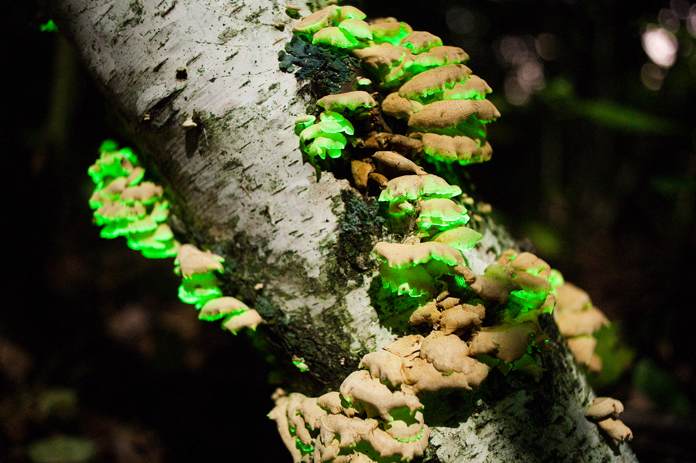
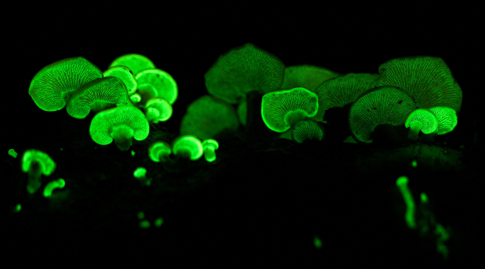
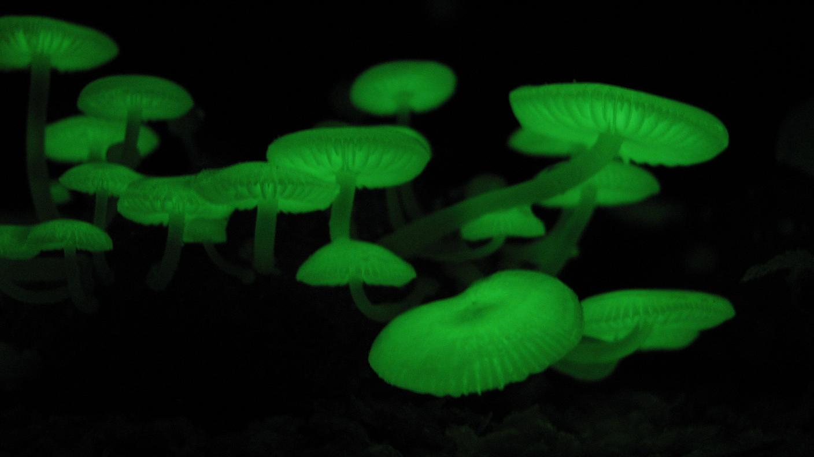
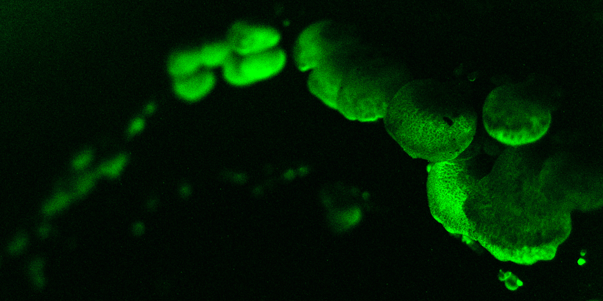
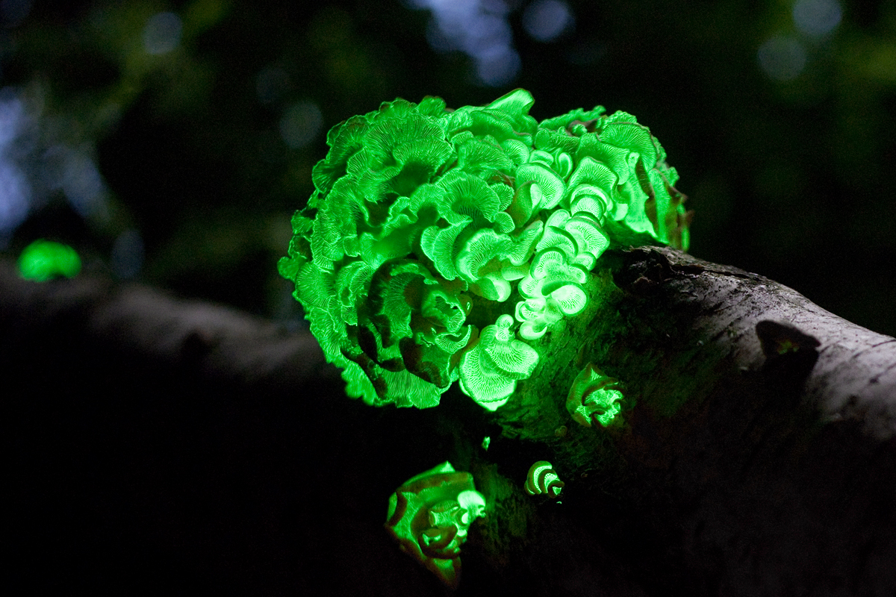
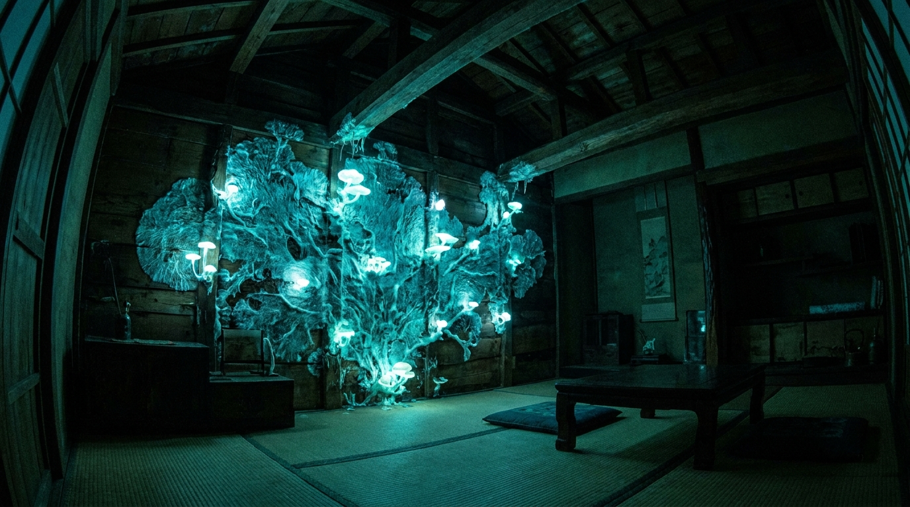
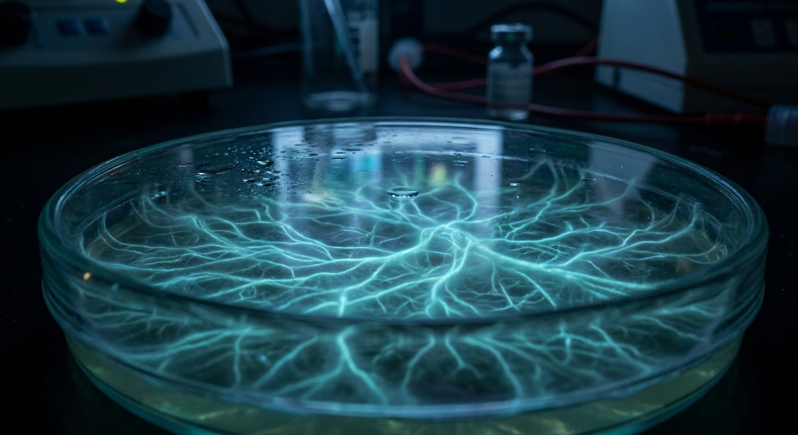
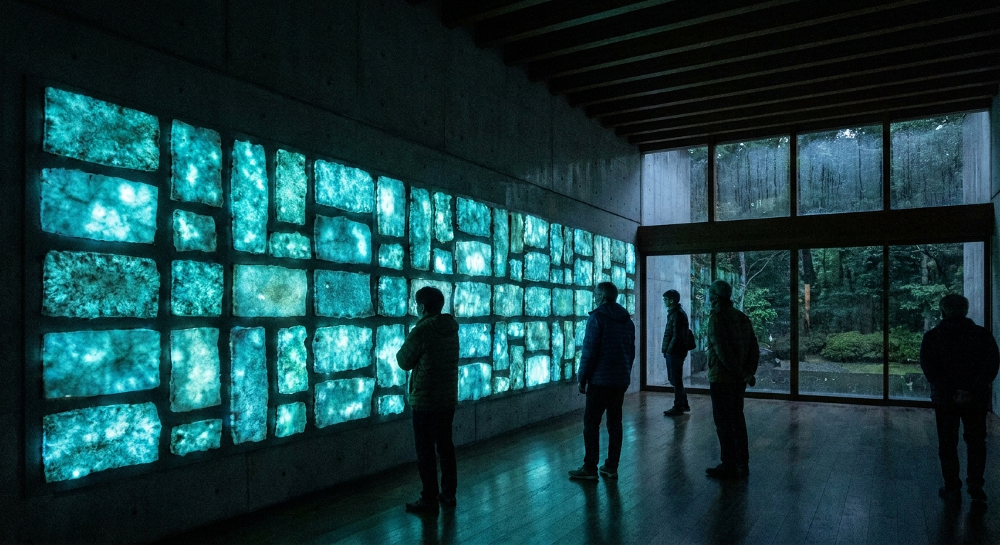

自然界に発光する菌類は約100種存在する。
そのルシフェリン反応を制御して、
TAPKOPの壁を夜に青白く光らせる。




| 種名 | 発光強度 | 発光部位 | 入手 | 培養難度 | 備考 |
|---|---|---|---|---|---|
|
Panellus stipticus
ヒイロスギタケモドキ属。北米・日本分布。
|
菌糸体・子実体 | 容易 | 初級 | ◎ 最初の試作に最適。菌床キット流通あり。カフェ酸添加で発光増強。 | |
|
Mycena chlorophos
日本固有。八丈島・小笠原諸島分布。
|
子実体（傘・柄） | やや困難 | 中級 | 最強クラス発光。高温多湿環境が必要。北海道での培養は加温必須。 | |
|
Neonothopanus nambi
熱帯種。ブラジル・東南アジア分布。発光遺伝子の解析モデル種。
|
菌糸体・子実体全体 | 研究機関経由 | 上級 | 2020年の遺伝子解析論文に使用されたモデル種。菌株入手に研究協力が必要。 |




| 材料 | 入手先 | 数量 | 概算 |
|---|---|---|---|
Panellus stipticus 菌株 純粋培養菌株。PDA斜面培地入り。 |
国内菌株販売業者 / ATCC | 1株 | ¥3,000〜8,000 |
オーク木材チップ + 糠 栄養培地。ブロック成形用。 |
ホームセンター / 農業資材店 | 5kg | ¥800 |
カフェ酸（caffeic acid）1g 発光増強基質。食品添加物グレードで可。 |
Sigma-Aldrich / 試薬業者 | 1g | ¥1,500 |
HDPE フレーム 300×300×30mm CNC加工済み。パネル成形型。 |
自作CNC（SOLUNA Fab） | 1枚 | ¥800 |
Arduino Nano + MOS-FET + 電極 発光制御用電気刺激回路。 |
秋月電子 / AliExpress | 1式 | ¥2,500 |
超音波加湿モジュール + 温湿度センサー Living Panel 維持システム。 |
AliExpress | 1式 | ¥3,200 |
全天暗室撮影用：ミラーレス + 三脚 ISO3200以上、30秒露出で発光記録。 |
手持ち機材流用可 | 1式 | （既存） |
| 初期材料費 | ¥12,000〜 | ||
電気を使わずに光る壁を作れたら、
建築の定義が変わる。
菌糸体は素材ではなく、パートナーだ。
— SOLUNA Bioluminescence Lab, TAPKOP 2026